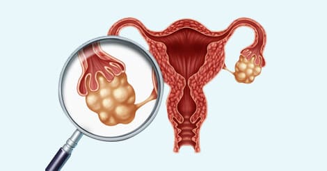

Ovarian cancer

SYMPTOMS:
- abdominal bloating, pressure, and pain
-
abnormal fullness after eating
-
difficulty eating
-
an increase in urination
-
an increased urge to urinate
RISK FATORS
- a family history of ovarian cancer
-
genetic mutations of genes associated with ovarian cancer, such as BRCA1 or BRCA2
-
a personal history of breast, uterine, or colon cancer
-
obesity
-
the use of certain fertility drugs or hormone
- therapies
-
no history of pregnancy
-
endometriosis
DIAGNOSIS
-
Transvaginal ultrasound (TVUS). TVUS is a type of imaging test that uses sound waves to detect tumors in the reproductive organs, including the ovaries. However, TVUS can’t help your doctor determine whether tumors are cancerous.
-
Abdominal and pelvic CT scan. If you’re allergic to dye, they may order a pelvic MRI scan.
-
Blood test to measure cancer antigen 125 (CA-125) levels. A CA-125 test is a biomarker that’s used to assess treatment response for ovarian cancer and other reproductive organ cancers. However, menstruation, uterine fibroids, and uterine cancer can also affect CA-125 levels in the blood.
-
Biopsy. A biopsy involves removing a small sample of tissue from the ovary and analyzing the sample under a microscope.
TREATMENT
-
chemotherapy
-
surgery to stage the cancer and remove the tumor
-
targeted therapy
-
hormone therapy